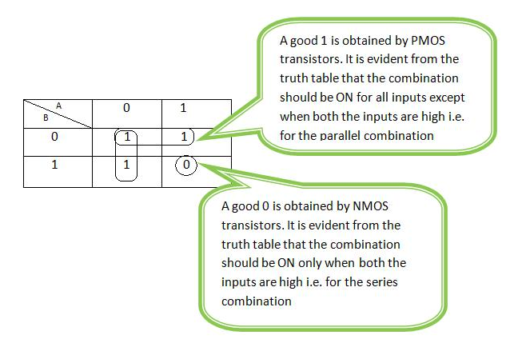
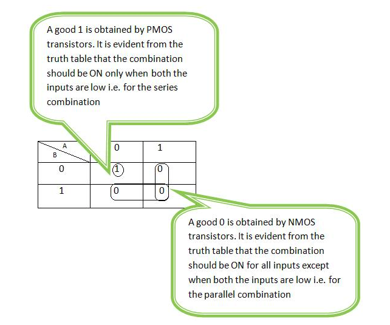

Schematic Design Of Transistor Level NAND & NOR Gate
Introduction
Definition of NAND Gate
NAND gate has 1 output and 2 or more inputs.
The output of the NAND gate is low only when all the inputs are high else it is low.
A NAND gate could be veiwed as an AND gate with inverter at the output.
Schematic and truth table of NAND Gate:

Definition of NOR Gate
NOR gate has 1 output and 2 or more input
The output of NOR gate is high only when all the inputs are low else it is high.
A NOR gate could be viewed as an OR gate with inverter at the output.
Schematic and truth table of NOR Gate:

Theory
Switching behaviour of transistor
The gate of the MOS transistor controls the passage of the current between the drain and source. If the voltage at the gate is
Vdd, no current flows between the drain and source of PMOS and same is the case with NMOS if its gate is grounded. This
characteristic of MOS transistors, enables it to be viewed as a switch. The switching behaviour of nmos and pmos device is
shown in the figure below. Here the input 0 indicates that the gate is grounded and input 1 indicates that Vdd is applied to the gate:

Series and Parallel Connection
The transistor level schematic of any combinational logic can be obtained by placing two or more n/p-switches in series or parallel.
If switches are connected in series then the composite switch hence constructed is closed when both the switches are closed.
The series connection is shown in the figure below.The table indicates the states of the switch contructed by series connection
depending on the inputs A and B.

If the switches are connected in parallel then the composite switch hence constructed is closed when either or both of the
switches are closed.The parallel connection is shown in the figure below.The table indicates the states of the switch
obtained by parallel connection depending on the inputs A and B.

K-Map for NAND

Thus for NAND gate PMOS devices are connected in parallel between Vdd and output node, whereas the NMOS devices are in series
between output node and ground.
K-Map for NOR

Thus for NOR gate PMOS devices are connected in series between Vdd and output node,whereas the NMOS devices are in parallel
between output node and ground.